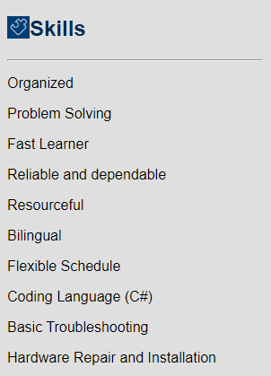

Federico Bustos Jr.
My most immediate goal is to obtain a job position where I can grow within and succeed on an everyday basis.
I am a very fast learner and always have a hunger to learn more.
I have numerous job skills but am not limited to grunt work.
Overall I feel I could bring a lot to the table, with a lot of room for learning and growth within the company.

Experience
Backroom Associate
Sears
Oct. 2019 - present
- Unload and sort merchandise from truck.
- Unpack and sort merchandise.
- Prepare customer's online orders and create packages to be ship out.
- Deliver or load orders to customers through merchandise pick-up.
- Help clean and straighten the shoe department.
Volunteer Audio Visual Technician
Iglesia Pentecostal Unida
Jun. 2015 - present
- Operate a digital sound mixing board during church services.
- Create presentations and visuals to display on projector.
- Maintain or repair equipment.
- Schedule and organize participation/practices for special events/services.
- Lead a team of volunteers each service.
- Work along side the worship team in services and practices.
- Train new members and new prospects.
Indie Game Developer
Apr. 2017 - present
- Create, uv unwarp, texture, rig, and animate 3d models.
- Write code needed for the game.
- Plan out and design the levels of the game.
- Test the game and log down any bugs or glitches
- Portfolio (Work In Progress):
Education
Simulation and Game Development, AAS Degree
Pitt Community College
May 2018
- Achieved the Dean's List
- Temporary member of Pitt Game Developers Association
High School Diploma
North Pitt High School
Jun. 2015

 Personal Info
Personal Info
Phone:
252-717-7570
E-mail:
fbustos330@my.pittcc.edu
My Hobbies:
Link to my hobbies.
Back to top of page